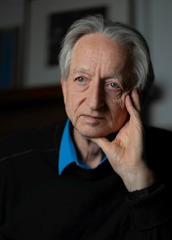
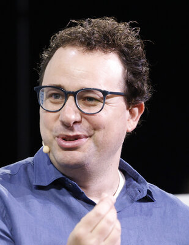
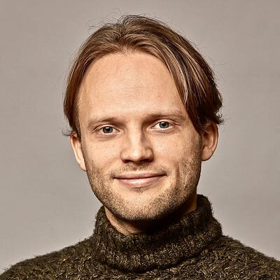
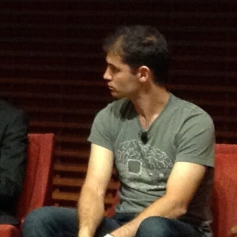
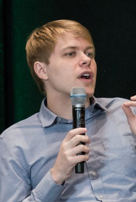
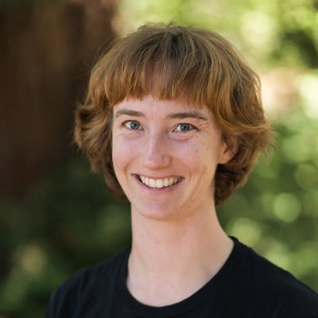
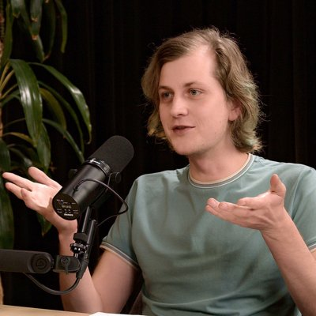

Atlas · People
The Guardians of AI
Who's who of AI safety and alignment: 173 researchers and public voices, 776 verbatim sourced quotes, 807 interviews and 688 verified videos, fact-checked.
Open /ai-safety-researchers/SAFE is one open home for the people, research, films and daily signal on AI safety, alignment and the road to the singularity. Every quote sourced. Every video verified.
Profiles, investigations, films, libraries and a daily brief. Start anywhere; every route links back here.
Atlas · People
Who's who of AI safety and alignment: 173 researchers and public voices, 776 verbatim sourced quotes, 807 interviews and 688 verified videos, fact-checked.
Open /ai-safety-researchers/Investigation · Trust
Who to trust on frominside.ai: the lab insiders interviewed by Palisade Research, with fact-checks, answers, motion explainers and side-by-side comparisons.
Open /frominside/Film · Superintelligence
Inside the race to keep superintelligence on our side. Twelve insiders from OpenAI, Google DeepMind and Anthropic on the real odds of losing control.
Open /control-superintelligence/Cinema · Watch
The most important conversation of our century, as a cinema. Watch, understand, decide: curated documentaries, debates and talks on AI risk.
Open /ai-safety-cinema/Library · Learn
A watch-and-learn hub: 21 topics and 175 hand-picked explainers, from harms today to agents gone rogue, scored from full-transcript reviews.
Open /ai-safety-library/Focus · Video index
The focused AI video library. Only the signal: 30 essential talks, about 38 hours, on research, alignment and safety. No feeds, no algorithm.
Open /signal/Guide · Careers
Should you build a career in AI safety? A fact-checked, interactive guide: AI-written code hype vs reality, how many people really work on safety, India engineering vs aerospace, paths after BTech, and whether education still matters.
Open /ai-career-compass/Mission control · Deadlines
Mission control for an AI safety career: a live deadline radar with countdowns for fellowships, hackathons and exams, a 30-day game plan, money moves and the ladder from BlueDot to lab research roles.
Open /launchpad/Daily · Brief
Your AI timeline minus the scroll: today's must-reads, news and posts from X, ranked and summarised so you can read what matters in ten minutes.
Open /x-focus-digest/Archive · Every day
Every edition of the X Focus Digest, one Page per day, kept forever so you can trace how the AI story unfolded.
Open /x-digest/The research programmes and institutions working to make sure advanced AI stays honest, understandable and under human control.
Making AI systems want what we intend: RLHF, constitutional training, scalable oversight and debate.
Watch the explainers →Opening the black box: features, circuits and sparse autoencoders that show what a model is really thinking.
Meet the insiders →Monitoring, sandboxing and protocols that keep even a possibly misaligned model from causing harm.
Watch CONTROL →Red-teaming and dangerous-capability tests for deception, cyber, bio and autonomous replication before release.
Open the cinema →Laws, safety institutes, summits and treaties: the EU AI Act, frontier safety frameworks and compute rules.
Find policy voices →Recursive self-improvement, intelligence explosions and timelines to AGI and superintelligence.
Watch the essential talks →The number-one pick in six topics of the Video Library, scored from full transcripts. Plays right here, privacy-enhanced.
Verbatim, with a link to the original source. Drawn from the Guardians of AI atlas.

Geoffrey Hinton Yoshua Bengio
Yoshua Bengio
 Stuart Russell
Stuart Russell
 Helen Toner
Helen Toner

Dario Amodei Paul Christiano
Paul Christiano
 Chris Olah
Chris Olah
 Neel Nanda
Neel Nanda
 Nick Bostrom
Nick Bostrom

Jan Leike Demis Hassabis
Demis Hassabis
 Sam Altman
Sam Altman
 Eliezer Yudkowsky
Eliezer Yudkowsky

Ilya Sutskever Daniel Kokotajlo
Daniel Kokotajlo
 Max Tegmark
Max Tegmark
 Ajeya Cotra
Ajeya Cotra
 Amanda Askell
Amanda Askell

Dan Hendrycks Connor Leahy
Evan Hubinger
Connor Leahy
Evan Hubinger

Beth Barnes
Buck Shlegeris Jared Kaplan
Jared Kaplan
Tap a slice or a chip to filter 173 researchers by focus, or search by name, lab or role.
Three steps through SAFE, tuned to who you are and how much time you have.
Eight ideas you need to follow any conversation about advanced AI, in one sentence each.
The field that works to make advanced AI systems reliable, controllable and beneficial, and to prevent accidents, misuse and catastrophic outcomes.
Getting an AI system to actually pursue the goals and values its designers and users intend, including in situations nobody tested.
Reverse-engineering what happens inside a neural network: which features and circuits it uses and why it produces a given output.
Designing safeguards, monitoring and protocols so that even a model that might be misaligned cannot cause serious harm.
A hypothetical AI that greatly exceeds the best humans across virtually every cognitive domain, a term popularised by Nick Bostrom (2014).
The idea, from I. J. Good and Vernor Vinge, that self-improving machine intelligence could trigger change so fast that the future becomes impossible to predict.
An AI system improving the very process that builds AI, so each generation designs a better next one: the engine behind an "intelligence explosion".
The laws, standards, institutions and international agreements that shape how frontier AI is built, evaluated and deployed.
Eight quick questions from the field guide and timeline. No sign-up, no tracking.
Seventy-six years from "can machines think?" to "can we control them?"
Alan Turing publishes "Computing Machinery and Intelligence" and asks whether machines can think.
I. J. Good describes an "intelligence explosion": the first ultraintelligent machine is the last invention we need ever make.
Vernor Vinge's essay "The Coming Technological Singularity" names the singularity.
The Singularity Institute, later MIRI, is founded to study the alignment of smarter-than-human AI.
Nick Bostrom's "Superintelligence: Paths, Dangers, Strategies" brings AI risk to a mass audience.
"Concrete Problems in AI Safety" sets out a research agenda for practical safety work.
The CAIS Statement on AI Risk calls extinction risk a global priority; the UK hosts the first AI Safety Summit at Bletchley Park.
The EU AI Act enters into force on 1 August, the first comprehensive AI law.
The first International AI Safety Report, led by Yoshua Bengio, is published in January.
Lab insiders, whistleblowers and Senate testimony push loss-of-control risk into the mainstream. SAFE tracks it live.
Every page, dataset and video index lives in one public GitHub repository. Fork it, star it, or send a correction.
SAFE: the open hub for AI safety, alignment, interpretability, superintelligence and the singularity.
git clone https://github.com/Agi-Asi/safe.gitSAFE keeps growing. New routes land here as they ship.
Every frontier lab's safety framework, system card and policy change in one timeline.
Landmark alignment and interpretability papers, explained in plain words with animations.
Capability milestones, forecasts and timelines from AI Futures Project, METR, Metaculus and more.
AI laws, summits and institutes around the world, India included, on one living map.
SAFE is an open, free hub by Aniruddha Adak that gathers the people, research, films, videos and daily news of AI safety, alignment and superintelligence into one place, so anyone can understand the most important technology debate of our time.
The Guardians of AI atlas profiles 173 of them, including Geoffrey Hinton, Yoshua Bengio, Stuart Russell, Paul Christiano, Chris Olah, Jan Leike, Neel Nanda, Ajeya Cotra and Helen Toner, with verbatim sourced quotes and verified interviews for each.
AI safety is the broad field of preventing harm from AI, from everyday failures to catastrophic risk. Alignment is one core part of it: making sure an AI system genuinely pursues the goals people intend.
Superintelligence is AI that far surpasses humans in nearly every cognitive task. Researchers worry that if such a system is not aligned and cannot be controlled, humans could lose the ability to correct it.
It is the hypothesised point where self-improving AI accelerates progress so sharply that the future becomes unpredictable. The idea traces back to I. J. Good (1965) and Vernor Vinge (1993).
Start with the AI Safety Video Library's seven-step path, then explore the Guardians of AI atlas to see who is working on what, and read the X Focus Digest daily to keep up with the news.
Yes. Everything is published openly on GitHub at github.com/Agi-Asi/safe and served free on GitHub Pages. Quotes and videos link to their original sources.
AI Agent Engineer and full-stack developer from Kolkata, India. Open-source contributor, AI filmmaker and creator of the AI AGI ASI channel. SAFE is his open project to help everyone understand the most consequential technology of our century.